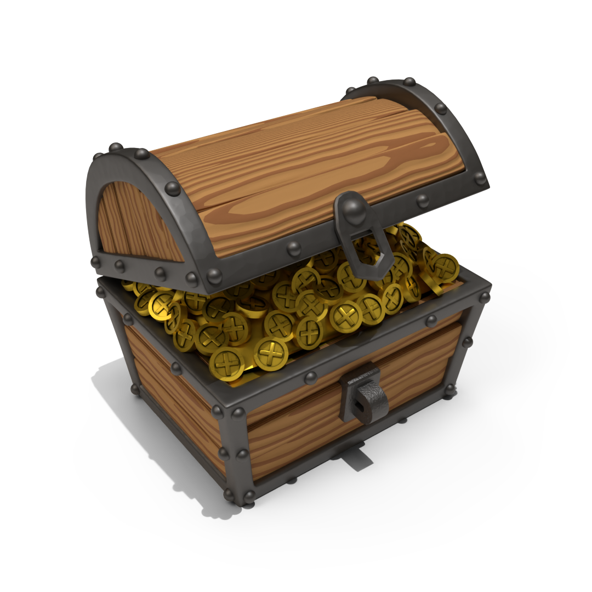

← Back to Code Projects
← Zurück zu Code-Projekten
Python · Blender Add-on
Python · Blender-Add-on
Game Asset Maker
A Blender add-on for preparing unique hero assets for game engines.
Ein Blender-Add-on zur Vorbereitung einzigartiger Hero-Assets für Game-Engines.
Python
Blender API
Tool Development
Tool-Entwicklung
Game Assets
Game Assets

Purpose
Zweck
-
Turn selected Blender objects into game-ready assets
Ausgewählte Blender-Objekte in game-ready Assets umwandeln
-
Reduce repetitive export preparation
Repetitive Export-Vorbereitung reduzieren
-
Especially useful for unique hero assets
Besonders geeignet für einzigartige Hero-Assets
Best suited for
Geeignet für
-
Single, unique game props
Einzelne, einzigartige Game-Props
-
Indie game assets
Indie-Game-Assets
-
Blender-to-engine workflows
Blender-zu-Engine-Workflows
Core Features
Kernfunktionen
Bake
Baking
Materials and details into texture maps.
Materialien und Details in Textur-Maps.
Optimize
Optimierung
Topology reduction, triangulation and LODs.
Topologie-Reduktion, Triangulation und LODs.
Export
Export
Prepared model and textures for game engines.
Vorbereitetes Modell und Texturen für Game-Engines.
Why it matters
Warum es relevant ist
-
Complex Blender materials → baked textures
Komplexe Blender-Materialien → gebackene Texturen
-
High-poly detail → normal maps
High-Poly-Details → Normal-Maps
-
Large models → optimized game assets
Große Modelle → optimierte Game Assets
Technical focus
Technischer Fokus
-
Blender Python API
Blender Python API
-
Automated asset-processing workflow
Automatisierter Asset-Processing-Workflow
-
Tool UI, baking, mesh data and export logic
Tool-UI, Baking, Mesh-Daten und Export-Logik